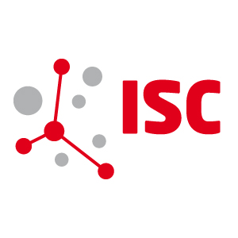

~/about-me
// exploring my academic and professional journey
📥 $ wget resume.pdfmake -j$(nproc) work_experience
[100%]
Linking
work/sevencs.so
✅ ACTIVE
Software Developer
Aug 2024 — Present
Contributing towards the development of Nautilus SDK and Pathfinder ECDIS.
[ 80%]
Building
research/tum_caps.o
✅
Research Assistant — Chair of Computer Architecture and Parallel Systems
TU Munich · Under
Prof. Martin Schulz
Jul 2023 — Jul 2024
Contributed to the Deep-Sea projects, mainly
sys-sage and mitos:
- Performance optimization and memory leak identification in sys-sage
- Reduced valgrind-reported memory leaks by ~99%
- Improving portability of mitos for Intel-based systems
[ 75%]
Building
research/tum_aero.o
✅
Research Assistant — Chair of Aerodynamics and Fluid Mechanics
TU Munich · Under Prof. Xiangyu Hu
Jul 2023 — Sep 2023
Developed a Python interface using pybind11 for SPHinXsys, an open-source SPH library, enabling seamless integration into
Python-based workflows.
[ 60%]
Linking
work/awi_precice.so
✅
Research Assistant
Aug 2023 — Oct 2023
Contributed towards preCICE 3.0:
- Removed deprecated features including MPI-single tags, VTK Support, and Master/Slave tags
- Migrated mesh-to-mesh mapping tests to use samples (preCICE 3.0 feature)
[ 40%]
Linking
work/intel.so
✅
Working Student — Cloud Graphics and Gaming
May 2022 — May 2023
Part of the Visual Cloud Engineering team:
- Performance analysis and benchmarking of Vulkan/OpenGL-based graphics applications on Intel dGPUs and Xeon Processors
- Extended OpenGL/Vulkan-based 'gears' graphics application for cross-OS and cross-API compatibilities
- Linux troubleshooting and bash scripting for lab infrastructure
[ 20%]
Building
work/zeus_numerix.o
✅
CAE Engineer — Development
Aug 2020 — Aug 2021
Rigorous problem-solving and software development in Computational Electromagnetism, Radar signature
prediction, and target detection:
- C++ software for Radar Cross Section prediction using SBR method
- Algorithm for 2D/3D ISAR image construction of far-field targets
- Hotspot identification and scattering center extraction
- Structural analysis of Plume Dissipation Mechanism
[ 10%]
Building
intern/iit_bhu.o
✅
Research Intern
May 2019 — Dec 2019
Department of Mechanical Engineering:
- Regression model for predicting heat transfer coefficient variation during jet impingement quenching
- 1D and 2D numerical models for temperature gradient prediction on nuclear fuel rods
[ 5%]
Building
intern/iit_kgp.o
✅
Research Intern
Nov 2018 — Dec 2018
Designed and fabricated a paper plane launching mechanism for MAVs:
- Simulated flight path for all possible flight regimes using MATLAB
make -j$(nproc) education
[100%]
Building
edu/msc_tum.o
✅
MSc in Computational Science and Engineering
Oct 2021 — Aug 2024
Coursework: Advanced Programming, Scientific Computing, Computer Architectures,
Parallel Programming, Numerical Algorithms for HPC, CFD.
[ 75%]
Building
edu/exchange_polytechnique.o
✅
Visiting Student — EuroTeQ
Jan 2023 — Jun 2023
Coursework: Distributed Systems, Computer Networks.
[ 70%]
Building
edu/exchange_upm.o
✅
Exchange Student — ATHENS Program
Mar 2023
Coursework: Spanish economy and navigation in the 15th–18th centuries by ETSI
Navales.
[ 25%]
Building
edu/btech_iiitdm.o
✅
B.Tech in Mechanical Engineering
Aug 2016 — Jul 2020
Bachelor's thesis: Numerical Investigation of Jet Impingement Quenching.
make -j$(nproc) publications

ISC High Performance 2025 • 40th International Conference
Heat Transfer Engineering • Volume 45, Issue 4-5 (2024)
 Fluid Mechanics and Fluid Power (Vol. 3) • FMFP 2021
Fluid Mechanics and Fluid Power (Vol. 3) • FMFP 2021
[100%] Build complete. 0 errors, 0 warnings. 🎉
Terminal
🗗
🗑️
✕
durganshu@dev:~$ whoami
C++ Software Developer @ SevenCs GmbH (Teledyne), Hamburg 🇩🇪
durganshu@dev:~$ cat skills.txt
C++ · HPC · GPU Programming · MPI · OpenMP · OpenGL · Vulkan
durganshu@dev:~$ cat interists.txt
High-Performance Computing · HPC-QC Integration · Scientific
Computing
durganshu@dev:~$ echo "Welcome!"
Welcome to my digital playground — explore my projects, research, and
blogs!
durganshu@dev:~$